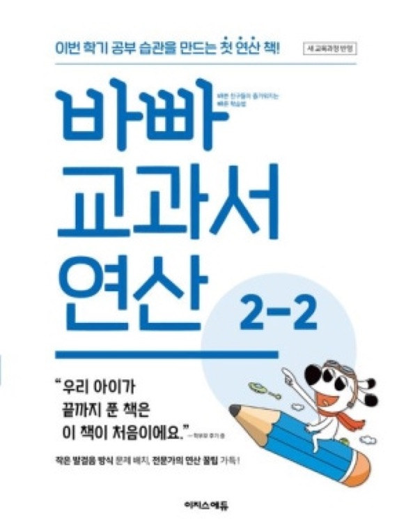
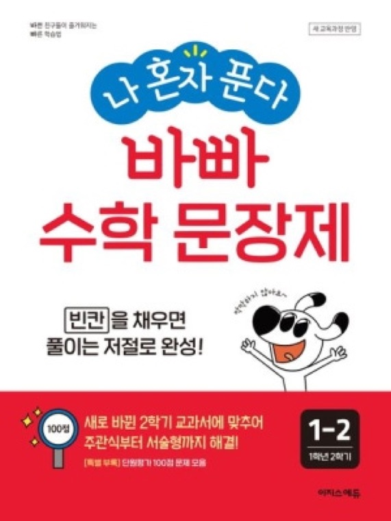
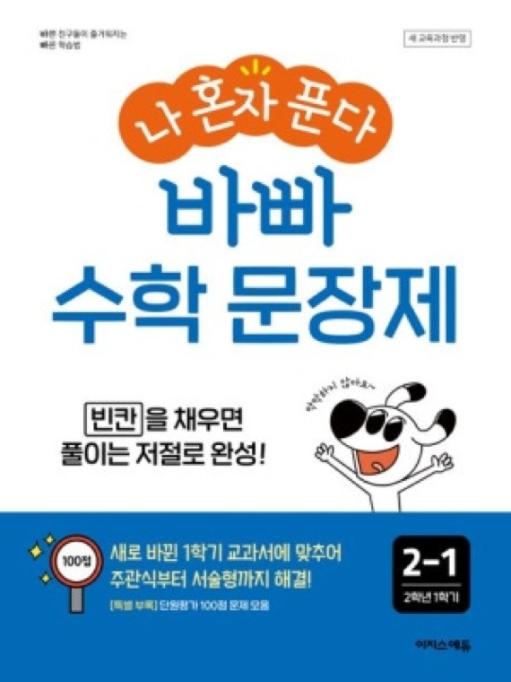
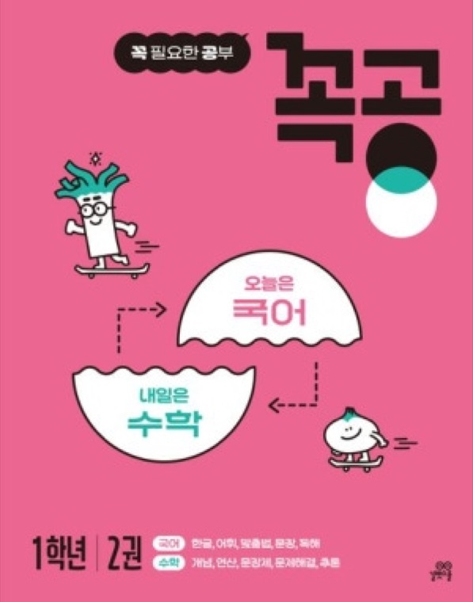
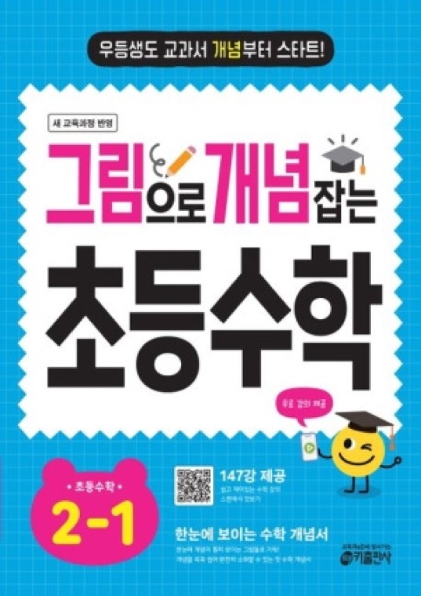
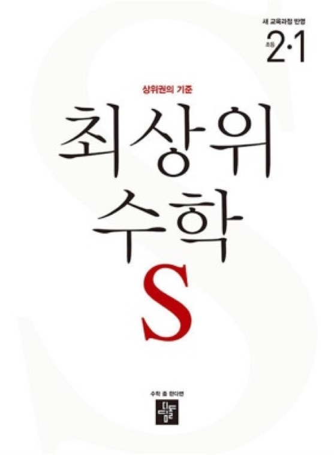

📐 투빈맘's 엄마표수학 자료나눔
📐 투빈맘's 엄마표수학 자료나눔
투빈맘's 엄마표수학💗
로드맵 (초1 성빈)
7세부터 초1 여름방학까지,
실제로 걸어온 길 그대로예요
📐 투빈맘's 엄마표수학 자료나눔
7세부터 초1 여름방학까지,
실제로 걸어온 길 그대로예요
성빈이는 형아와 달리, 수학 문제집 위주로만 진행했어요! 한글엔 관심이 거의 없었고, 숫자·규칙·퍼즐 같은 수학 활동에 더 흥미를 보여서, 좋아하는 수학으로 먼저 학습 루틴과 자신감을 만드는 전략을 선택했어요.
✨ 좋아하면 오래 가고 → 오래 가면 실력이 붙고 → 실력이 붙으면 공부가 재미있어져요!
학원 없이, 수학 중심 루틴으로 기초를 쌓아서, 여름방학엔 2학기 심화 문제까지 맛본 한 해예요.
문제집 양은 많지 않지만,
아이 속도에 맞춰 '매일 이어가는 것'에 집중한 루틴💗
빠르게보다 → 익숙해지는 게 목표인 단계






